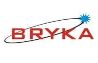

01
イノベーションとDXソリューションのパートナーです。
特定業界、革新的なデジタル技術、システムの専門家として、Siemens製品・システムポートフォリオを活用し、お客様の要件に確実に応えます。
Siemens
ThinkInnov-NexGenは
01未来は
PLM、
2014年創業のソフトウェア開発サービス企業として、着想を実用的なデジタルソリューションへ変えています。
02私たちが
デジタル化と技術革新によって大量の製品データを収集できるようになりました。しかし、そのデータから意味のある情報や知見を引き出すには、明確に定義されたデジタル基盤とビジョンが必要です。これが欠けていると、既存の製品データを有効に活用できません。
解決の新製品開発において既存の知的資産を再利用することは、開発コストと期間を削減する最大の機会です。
解決のシステムや部品の重複は、新製品導入における企業の主要な懸念事項です。
解決の製品開発の初期段階では、新製品の性能を予測することができません。
解決の03製品
製品ライフサイクル全体のデータとプロセスを収集・分析・可視化します。開発から製造、実使用のフィードバック、そして設計へと戻るクローズドループの分析を実現します。
01 / 09
アイデアや市場ニーズを収集・評価し、有望な候補を製品化の判断へと進めます。
02 / 09
顧客、社内、規制上の要求を、製品が満たすべき要件として明文化し、後の検証の基準とします。
03 / 09
機械設計と電気設計のチームが、既存の部品や知識を可能な限り再利用しながら、3Dモデルと回路図で製品を定義します。
04 / 09
設計データを変更管理のもとで出図・改訂・構成管理し、すべてのチームが同じ製品定義に基づいて作業できるようにします。
05 / 09
量産に移行する前に、シミュレーションと試験によって設計が要件を満たしているかを確認します。
06 / 09
生産工程を計画し、工場を運用するERPやMESへ設計・技術データを引き渡します。
07 / 09
設計と並行して品質を計画し、生産段階まで追跡して、問題が発生した際には原因までさかのぼります。
08 / 09
使用中の製品から、実際の性能を示すフィードバックが得られます。
09 / 09
フィードバックと得られた教訓を変更として設計に戻し、次の改訂を既存の知見から始められるようにします。
04コンサルティングから
スタートアップから大企業まで、最適なソフトウェア選定、導入、トレーニング、継続支援を提供します。
サービス一覧導入前
導入中
導入後
05製品カタログ
設計、ライフサイクル管理、製造自動化、ローコード開発に対応するSiemens主要ソリューションです。
製品一覧06エンジニアリング
製品データ、品質、変更、統合、デジタル製造に対応するPLM・エンジニアリングソリューションです。
07業界別PLM
イノベーションとデジタル変革を加速する、業界別PLMソリューションです。
業界一覧08すべての
事業の初期段階から、製品データを整理し、コラボレーションを促進し、品質を確保し、すべてを追跡できます。
データ管理を簡素化し、コミュニケーションを強化し、市場投入までの期間を短縮します。
エンドツーエンドの可視性、グローバルなコラボレーション、コンプライアンス、リスク管理、大規模なイノベーションを実現します。
オンプレミス、クラウド、自社運用、Siemens運用など、必要な形でTeamcenterを導入できます。
オンプレミス、クラウド、SaaSをお客様の運用モデルに合わせて提供します。
自社ITチームでPLMソフトウェアをホスト、管理、サポートできます。
クラウド
SaaSとして素早く開始でき、運用、保守、アップグレードも含まれます。
お客様の業界と事業運営の形に合わせた、PLMの導入とシステム連携。
市場投入までの期間短縮、品質向上、コスト削減、イノベーション、法規制への対応。
リアルタイムの情報共有、タスク管理、部門をまたぐ円滑なコミュニケーション。
09お客様
自動車、航空宇宙、エネルギー、電気、製造業のお客様に信頼されています。



10お客様の
PLMアップグレード、導入スピード、長期サポートに関するお客様の声です。
We're thrilled with the successful Teamcenter upgrade and the incredible support provided by your team. Their dedication, professionalism, and teamwork made all the difference.
参考訳Teamcenterアップグレードの成功と、貴社チームの素晴らしいサポートに大変満足しています。献身、専門性、チームワークが大きな違いを生みました。
Congratulations on the successful Teamcenter upgrade! Your team's dedication and collaboration, especially the impressive work of the Young Guns, have been exceptional.
参考訳Teamcenterアップグレードの成功、おめでとうございます。皆様の献身と協力、特に若手メンバーの素晴らしい働きは非常に印象的でした。
We just Thinkin(g) No(w) that we have found a great vendor to support us on our needs. Your team deliveries are commendable.
参考訳私たちのニーズを支援してくれる優れたベンダーに出会えたと感じています。貴社チームの提供品質は高く評価できます。
I am thrilled at the pace of implementation and that the system is up and running and the teams are using it.
参考訳導入スピードに大変満足しています。システムは稼働し、チームも活用しています。
お客様の声は英語の原文を正とし、日本語は参考訳として併記しています。
12お問い合わせ
お問い合わせを